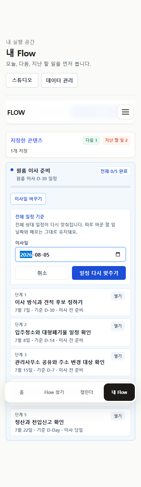
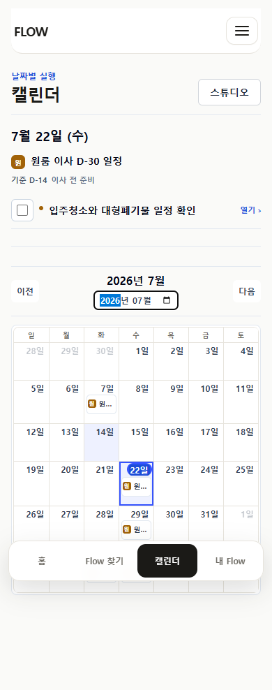
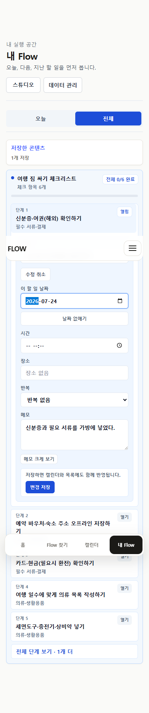
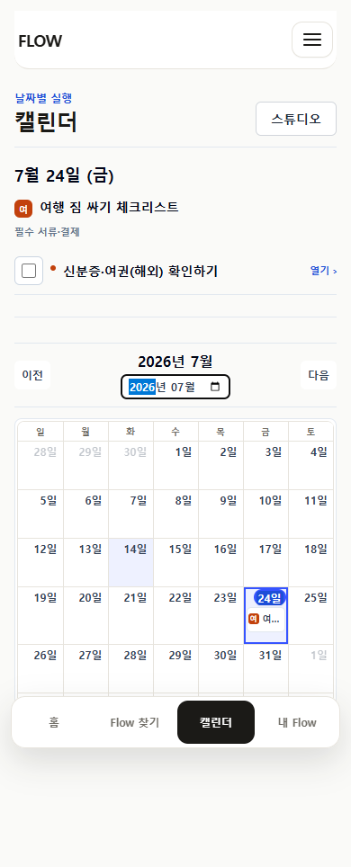
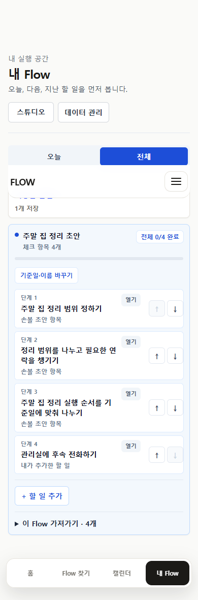
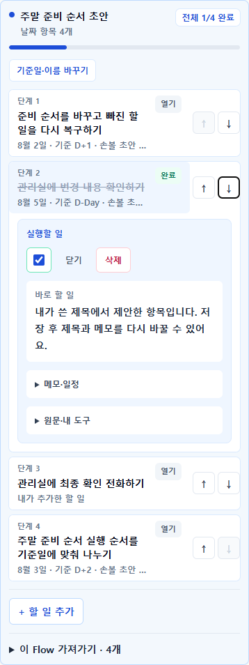
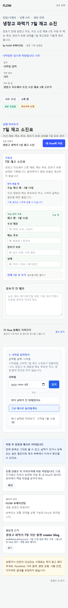
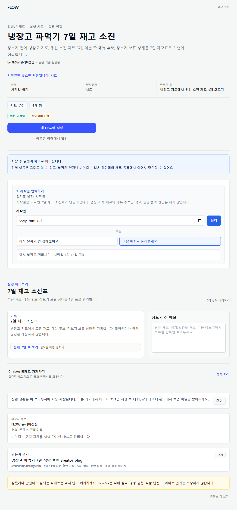
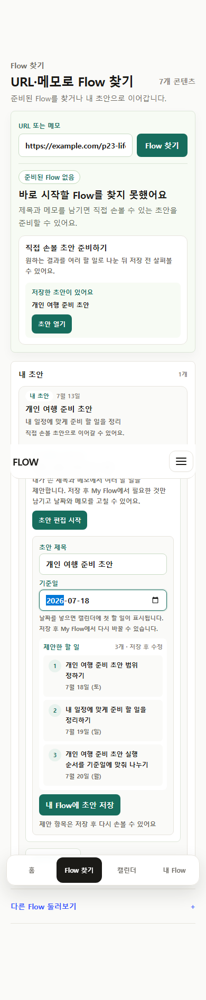
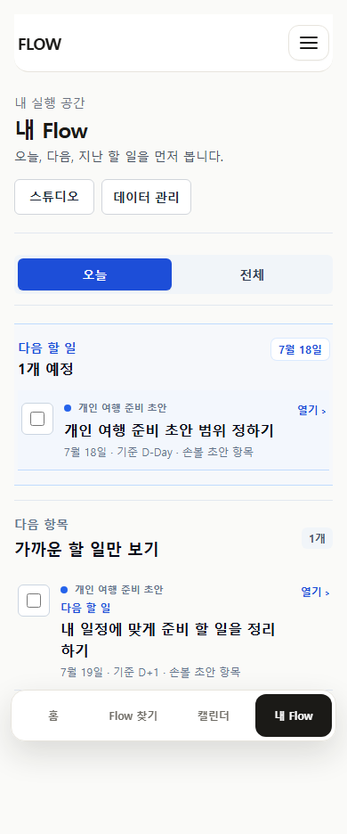

Current evidence · baseline e6b1cf3
P23에서 닫힌 것과 닫히지 않은 것
17구현 slice
16단계별 evidence
6Flow 유형
55screenshot
476/476unit pass
0명정식 관찰 참여자
판정 경계: 자동화는 state, persistence, export, overflow를 증명한다. 설명 없이 발견하고 이해하는지는 아직 증명하지 않는다.
Core loop · 강함URL/메모·공개 Flow → 저장 → 실행 → Calendar/export → 회고·다시 쓰기가 이어진다.
Portability · 강함개인 draft effective state를 Calendar, ICS, checklist, sheet, memo가 공유한다.
UX 발견성 · 관찰 필요기능은 있으나 일부 수정 entry가 3~4단계이고 실제 첫 사용자 evidence가 없다.
Source parity · 부분날짜와 기준일 connector는 닫혔지만 source-backed 구조 편집은 정책상 차단됐다.
Production data · 차단계정·DB·다른 기기 동기화가 없다. dependency audit에는 PostCSS moderate 2건이 남아 있다.
User evidence · 미확인owner feedback은 반영했지만 정식 관찰 참여자는 0명이다.
Six lifecycle simulations
Flow 유형별 사용자 여정
기준일 역산형
이사 30일 전, 원룸 이사 일정을 저장한 사용자
direct save에서도 이사일 바꾸기가 390/1024에 보이고 상대 일정만 재계산된다.
남은 경계 source-backed 항목 add/delete/reorder는 차단 상태다.
- 공개 Flow Map 저장
- 이사일 재설정
- 개별 할 일 날짜·메모 유지
- Calendar·ICS 확인
- 완료·회고·다시 쓰기


날짜 없는 체크리스트형
여행 전 필요한 것만 체크하고 일부를 일정에 넣는 사용자
날짜 없는 source-backed 항목도 개인 날짜를 정하고 없앨 수 있다.
남은 경계 구조 변경은 source merge 정책 때문에 제공하지 않는다.
- Flow 저장
- 항목 완료·완료 취소
- 날짜 지정
- 날짜 변경·제거
- Calendar·ICS/list export 확인


반복 루틴형
운동·학습 루틴을 반복하고 한 회차를 미루거나 건너뛰는 사용자
개인 draft는 series/occurrence/run 상태를 분리해 전 여정이 동작한다.
남은 경계 source-backed 반복 Flow에는 같은 occurrence 실행 control이 없다.
- 날짜·시간 지정
- daily/weekly/monthly 반복
- 회차 완료·재개
- 건너뜀·보류
- Calendar·반복 ICS 확인
순서·일정 혼합형
여행·프로젝트 준비 순서를 자기 방식으로 재구성하는 사용자
stable personal ID와 orderOverride가 새로고침, Calendar, export 전반에서 유지된다.
남은 경계 drag-and-drop은 의도적으로 제외했고 source-backed 구조 편집은 차단했다.
- 개인 draft 저장
- 항목 추가·삭제·복구
- 위/아래 이동
- 날짜·시간 지정
- 모든 destination 확인


기록·메모형
냉장고 재고와 실행 메모를 남기고 시트로 가져가는 사용자
콘텐츠별 field와 portable output은 유지되며 public 저장 전·후 경계도 분명하다.
남은 경계 사용자 정의 field add/delete/order는 runtime에 없다.
- 공개 workbench 확인
- Flow 단위 저장
- 기록·메모 입력
- sheet·memo export
- 완료 후 회고


개인 초안형
준비된 Flow가 없는 URL·메모를 직접 실행 초안으로 만드는 사용자
P23 structural/schedule/run projection의 기준 구현이다.
남은 경계 실제 AI 생성은 없으며 제안 shell을 사용자가 직접 다듬는다.
- miss 초안 시작
- My Flow 저장
- 구조·일정·반복 편집
- 완료·회고
- Calendar와 portable export
- 다시 쓰기


Supported / hidden / partial / missing / blocked
기능 완전성
| 행동 | 판정 | 현재 범위 | 남은 경계 |
|---|---|---|---|
| 발견·URL/메모 입력·저장 | supported | 공개 Flow, URL hit/miss draft, source-backed Flow Map | AI 자동 생성은 연결하지 않았고 초안은 사용자 편집 shell이다. |
| 완료와 완료 취소 | supported | My Flow, Calendar, 개인 draft occurrence | 체크박스 의미 이해는 실제 사용자에게 확인하지 않았다. |
| 날짜 지정·변경·제거 | supported | 개인 draft와 날짜 없는 저장 체크리스트 | source-backed 전체 유형을 대표 표본으로 모두 관찰한 것은 아니다. |
| 종일·시간·예상 소요 시간 | partial | 개인 draft user-created 항목은 My Flow·Calendar·ICS·list export까지 지원 | source-backed 항목의 시간 편집 parity는 대표 회귀만 있고 제품 전 범위 계약은 아니다. |
| 반복 rule·회차 생성·반복 ICS | partial | 개인 draft daily/weekly/monthly와 기존 source-backed routine editor | source-backed occurrence state와 series 편집 parity는 열지 않았다. |
| 회차별 완료·재개·건너뜀·보류 | partial | 개인 draft 반복 occurrence | source-backed 반복 Flow에는 같은 실행 control이 없다. |
| 항목 추가·삭제·복구·순서 변경 | partial | URL-first 또는 메모 개인 draft | source-backed 항목은 원본 버전 merge와 tombstone 정책이 필요해 차단했다. |
| 제목·개인 메모·개별 일정 수정 | hidden | 개인 draft와 저장 source-backed 항목 | 일부 모바일 경로는 Flow 열기→항목 열기→수정으로 3~4단계다. |
| Flow 전체 기준일 재설정 | supported | URL custom-start, personal copy, direct-saved moving Flow Map | 앵커가 없는 Flow에는 의도적으로 노출하지 않는다. |
| Calendar와 ICS 동일 projection | supported | scheduled source/user 항목, 종일·시간·반복 | 실제 외부 Calendar 앱 가져오기 관찰은 0회다. |
| checklist·sheet·memo portable export | supported | 개인 draft effective list와 source-backed 기존 builder | 직접 Notion/Todo 동기화는 범위 밖이며 파일/복사 기반이다. |
| 회고·과거 실행 상세·다시 쓰기 | supported | 완료 Flow snapshot, 읽기 전용 과거 항목, 새 run | 긴 실행 기록의 검색·요약 필요성은 관찰되지 않았다. |
| 원본 새 버전 검토와 개인값 보존 | partial | stable source-backed item과 saved source version | 개인 structural edit와 source v2의 제품 UI three-way merge는 아직 없다. |
| 다른 기기 복원·동기화 | blocked | 현재 브라우저 localStorage 백업/복원만 지원 | 계정·DB·동기화 정책이 선행되어야 한다. |
| 외부 Calendar·Notion·Todo 직접 동기화 | missing | ICS/checklist/sheet/memo portable 결과물은 지원 | OAuth와 양방향 충돌 정책은 P23 범위 밖이다. |
| 기록·메모형 필드 구조 사용자 수정 | partial | 콘텐츠별 workbench 필드와 export | 사용자 정의 field add/delete/order runtime은 아직 없다. |
Ownership first
상태 전이와 되돌리기
| 전이 | 소유자 | 판정 | 사용자 경로 |
|---|---|---|---|
pending → done | execution_run | supported | 행 왼쪽 체크박스 |
done → reopened | execution_run | supported | 같은 체크박스로 완료 취소 |
pending → skipped | occurrence_run | partial | 개인 반복 회차의 이번만 건너뛰기 |
skipped → pending | occurrence_run | supported | 다시 진행 |
pending → held | occurrence_run | partial | 개인 반복 회차의 잠시 보류 |
held → pending | occurrence_run | supported | 다시 진행 |
included → excluded | personal_overlay | hidden | 개인 사본 설정 |
visible → tombstoned | structural_overlay | partial | 개인 draft 항목 삭제 |
tombstoned → restored | structural_overlay | supported | 즉시 undo 또는 목록에서 뺀 할 일 |
source_order → personal_order | structural_overlay | partial | 개인 draft 위/아래 이동 |
unscheduled → all_day | structural_schedule | supported | 개인 draft와 저장된 날짜 없는 체크리스트 |
all_day → timed | structural_schedule | partial | 개인 draft 시간 지정 |
timed → all_day | structural_schedule | supported | 시간 제거, 날짜 유지 |
scheduled → unscheduled | personal_schedule | supported | 날짜 지우기 |
anchor_old → anchor_new | saved_map_snapshot | supported | 이사일/기준일 바꾸기 |
active_run → completed_run | execution_run | supported | 전체 완료와 회고 snapshot |
completed_run → new_active_run | execution_run | supported | 다시 쓰기, 과거 run 보존 |
source_v1 → source_v2_reviewed | source_version | partial | 새 버전 검토 후 새 run |
One effective state
My Flow / Calendar / export
| 상태 | My Flow | Calendar | ICS | Checklist | Sheet | Memo |
|---|---|---|---|---|---|---|
| 날짜 없는 user item | 포함 | 제외 | 제외 | 포함 | 포함 | 포함 |
| 종일 또는 timed user item | 포함 | 포함 | 포함 | 포함 | 포함 | 포함 |
| tombstoned 또는 excluded item | 현재 목록 제외 | 제외 | 제외 | 제외 | 제외 | 제외 |
| done 또는 reopened item | 상태 포함 | membership 유지 | membership 유지 | 상태 포함 | 상태 포함 | 상태 포함 |
| skipped 또는 held occurrence | 상태 포함 | series 유지 | series 유지 | 상태 포함 | 상태 포함 | 상태 포함 |
| 완료된 과거 run snapshot | 읽기 전용 | 재내보내기 없음 | 재내보내기 없음 | 제공 | 제공 | 제공 |
After P23
다음 순서
Now · 관찰
- 5명 × 3회 lifecycle 관찰
- 실제 Calendar 앱 ICS import
- 편집 depth와 상태어 이해 확인
Next · P24
- source v2 three-way merge contract
- orphan/tombstone preview
- source-backed occurrence state 필요성 결정
Later · Production
- 계정·DB·다른 기기 복원
- 통제된 Next/PostCSS upgrade
- 직접 Calendar/Notion/Todo 연동
- 사용자 정의 record field
Done · P23
- 개인 structural overlay
- 날짜·시간·반복·회차
- 통합 projection
- 회고·과거 run·다시 쓰기
- source 날짜/기준일 connector
Observed-user gate
실제 사용자에게 물을 것
- 이사일과 개별 날짜 수정 차이가 보이는가?
- 날짜 없는 할 일을 일정에 넣는 입구를 찾는가?
- 삭제·제외·건너뜀·보류를 구분하는가?
- 완료 취소를 바로 발견하는가?
- 위/아래 이동만으로 순서 조정이 충분한가?
- 반복 한 회와 Flow 전체 완료를 구분하는가?
- 실제로 다시 쓰는 export는 무엇인가?
- 과거 run은 항목 전체와 요약 중 무엇이 필요한가?
- 원본 업데이트에서 삭제 항목 재등장을 어떻게 기대하는가?
- 다른 기기 복원이 언제 필수가 되는가?